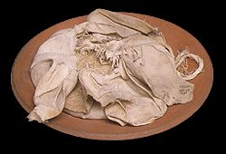

|
Embalming process
The ancient Egyptians developed a way of preserving bodies so that they would look lifelike. This process was called embalming. The process consisted of drying the body in a natural salt called natron, then rubbing oils onto the skin. After the body was embalmed it was wrapped in linen strips to protect it and keep it together.

Natron on a plate
Close
|